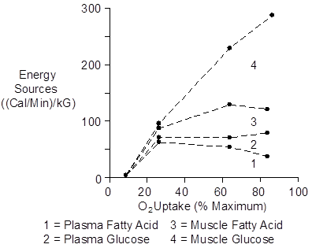

Exercise > Metabolism
Working skeletal muscle has four important sources of energy as shown below. Data is from Romijn et. al. (1993).

Plasma fatty acids are replenished by adipose tissue. Plasma glucose is replenished by the liver.
 Glucose
Glucose
The regulation of plasma glucose concentration in exercise is different than the regulation after a meal.
After a meal, the glucose absorption rate from the gut is greater than the glucose disposal rate. Blood glucose increases and this stimulates insulin secretion. Insulin increases glucose removal into skeletal muscle and the liver, thereby increasing the body’s glycogen stores.
In exercise, the important hormone is epinephrine. It stimulates glucose uptake by skeletal muscle and glucose release by the liver. Epinephrine also stimulates glucagon secretion and inhibits insulin secretion.
Insulin
Plasma insulin concentration decreases during exercise.
Insulin secretion is inhibited by epinephrine and falling blood glucose concentrations.
Glucagon
Plasma glucagon concentration increases during exercise.
Glucagon secretion is stimulated by epinephrine and falling blood glucose concentrations.
References
Romijn, J.A., E.F. Coyle, L.S. Sidossis, A. Gastaldelli, J.F. Horowitz, E. Endert and R.R. Wolfe. Regulation of endogenous fat and carbohydrate metabolism in relation to exercise intensity and duration. Amer. J. Physiol. 265:E380-E391, 1993.